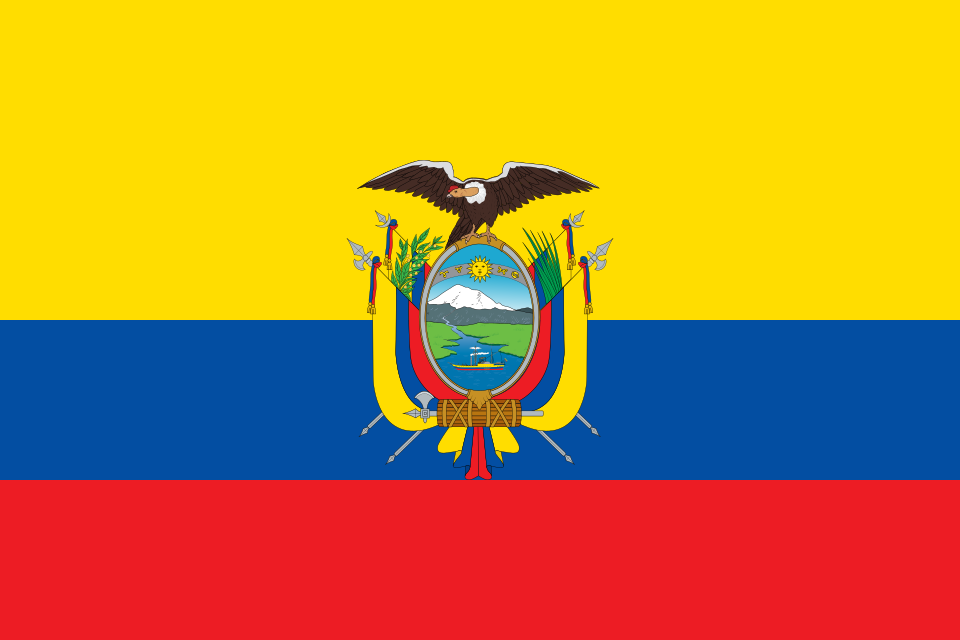

Manual de marca · agosto de 2026
Todo el café ecuatoriano, conectado.
Dos arcos con punta de flecha girando alrededor de un grano de café. Los arcos dicen que aquí las cosas circulan: café que sale, negocio que vuelve. El grano se ve desde abajo, con la hendidura recorriendo su eje.
Deja alrededor del logotipo un margen libre igual a la altura del grano. Nada debe invadirlo: ni texto, ni imágenes, ni el borde del soporte.
| Soporte | Mínimo |
|---|---|
| Pantalla | 16 px de alto |
| Impresión | 8 mm de alto |
| Bordado o grabado | 15 mm · usar la versión monocroma |
Es un elemento independiente: acompaña al logotipo, nunca va dentro. Así el logotipo funciona en soportes de un solo color, donde tres tintas planas no caben.

bandera oficial| Uso | Color | HEX |
|---|---|---|
| Café · cabecera, pie, logotipo | #3B1A0C | |
| Poso · fondos oscuros | #2A1207 | |
| Acento sobre claro | #A94E17 | |
| Acento sobre oscuro | #DFA066 | |
| Papel · fondo | #FBFAF7 | |
| Tinta · texto | #14140F |
Valores RGB y CMYK en 04-paleta/paleta.txt.
| Uso | Fuente | Licencia |
|---|---|---|
| Titulares y texto | Inter | SIL OFL · libre |
| Nombre de la marca | DM Serif Display | SIL OFL · libre |
| Datos, precios, etiquetas | Monoespaciada del sistema | — |
La serif se reserva al nombre de la marca. En titulares corrientes se usa Inter con peso 600 y espaciado cerrado.
| Carpeta | Contenido |
|---|---|
| 01-logotipo/svg | Vectorial editable. Es el original: partir siempre de aquí. |
| 01-logotipo/png | 128, 256, 512 y 1024 px, con fondo transparente. |
| 01-logotipo/pdf | Vectorial para imprenta. |
| 02-favicon | ICO multitamaño y PNG de 16 a 512 px. |
| 03-bandera | Bandera oficial en PNG y WebP. |
| 04-paleta | Colores con HEX, RGB y CMYK. |
| 05-manual | Este documento. |
Red Café Ecuador · redcafeecuador.com